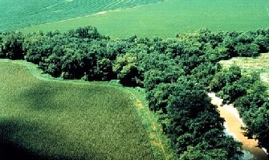

Designing or Restoring a Riparian Buffer Zone
What is it?
A riparian buffer zone is a designated and protected section of vegetation and habitat along streams, creeks, lakes, and wetlands. Buffer zones are an important conservation tool for private lands, urban areas, agricultural areas, and many industrial operations to stabilize stream banks, filter stormwater runoff, provide wildlife and fish habitat, and protect water infiltration zones.

Riparian buffer (photo from NRCS)
Conservation Benefits
- Efficient floodwater managment
- Maintains riparian corridor
- Provides wildlife and fish habitat
- Provides water infiltration zones
- Stabilizes stream bank erosion
- Stormwater filtration (for sediment, pollution, nutrients)
What does it include?
A riparian buffer zone should be designed or restored under the guidence of technical experts. Buffer zones will vary in width depending on the region, watershed, and identified objectives. Designs or restoration plans should also consider erosion potential of the soil, native plants suitable for wildlife and fish, and identify permitted or prohibited activities within the buffer zone.
Riparian Buffer Zone Links
- A guide for local governments: wetlands and watershed management (Institute for Wetland Science and Public Policy of the Association of State Wetland Managers)
- A model riparian buffer implementation plan: a simple, low-cost Great Lakes protection tool (Superior Watershed Partnership)
- A review of the scientific literature on riparian buffer width, extent, and vegetation (University of Georgia)
- Buffers and land management (USDA and US Forest Service)
- Buffers in karst landscapes (USDA and US Forest Service)
- Buffer arrangement near sources (USDA and US Forest Service)
- Buffers and ecosystem services (USDA and US Forest Service)
- Buffer species selection (USDA and US Forest Service)
- Buffer site design (USDA and US Forest Service)
- Buffer slope and soil type adjustments (USDA and US Forest Service)
- Buffer strip function and design: an annotated bibliography (Alaska Dept. Fish and Game)
- Buffer biodiversity (USDA and US Forest Service)
- Buffers for shallow groundwater (USDA and US Forest Service)
- Buffers and road intersections (USDA and US Forest Service)
- Buffers and cropland management (USDA and US Forest Service)
- Buffer allowances for bank erosion (USDA and US Forest Service)
- Buffer width design tool for surface runoff (USDA and US Forest Service)
- Conservation buffer strips (p.3; Kansas State University)
- Creating and managing buffers (p. 23; University of Virginia)
- Delineating and protecting the buffer during construction (Section 5; Northern Virginia Planning District Commission)
- Design of forest riparian buffer strips for the protection of water quality: analysis of scienfic literature (Idaho Forest, Wildlife and Range Policy Analysis Group)
- Design recommendations for riparian corridors and vegetated buffer strips (US Army Corps Engineers)
- Developing an ecological aesthetic buffer (USDA and US Forest Service)
- Effective buffer ratio (USDA and US Forest Service)
- Establishing a new buffer or repairing and exitsting buffer (Section 5; Northern Virginia Planning District Commission)
- Fisheries guidlines for fish habitat buffer zones (Queensland Fisheries Service)
- Lake and stream corridor owner's guide for riparian buffer establishment: water quality improvement, wildlife habitat, and stream bank stabilization (Southeast Michigan Resource Conservation & Developement Council)
- Managing shade in buffers (USDA and US Forest Service)
- Protecting riparian areas: farmland management strategies (Appropriate Technology Transfer for Rural Areas)
- Protecting Water Quality and Stream Habitat: The Stroud Preserve riparian buffer (Stroud Water Research Center)
- Riparian buffers (Stream Notes)
- Riparian buffer (Cooperative Extension Service- University of Kentucky)
- Riparian buffer design guidelines for water quality and wildlife habitat functions on agricultural landscapes in the intermountain west (USDA, US Forest Service)
- Riparian buffers for the Catawba Mainstem and Lakes (North Carolina Department of Environmental and Natural Resources)
- Riparian buffer preservation (Alliance for the Chesapeake Bay)
- Riparian buffer restoration (Pennsylvania Dept. of Environmental Protection)
- Riparian buffer width, vegetative cover, and nitrogen removal effectiveness (US EPA)
- Riparian buffer zones (NRCS)
- Riparian buffer zones (Southeast Watershed Forum)
- Riparian buffer zones: functions and recommended widths (Yale School of Forestry and Environmental Studies)
- Riparian buffer zone lesson plan (Codorus Creek Improvement Partnership)
- Riparian buffer zones: vital to healthy rivers and streams (Addison County Regional Planning Commission and Middlebury River Watershed Partnership)
- Riparian forest buffer (NRCS)
- Riparian forest buffer design, establishment, and maintenance (Maryland Cooperative Extension)
- Riparian forest buffers for trout habitat improvement: design of riparian forest buffers (University of Minnesota Extension)
- Riparian forest buffer design procedures (NRCS)
- Riparian management practices: a summary of state guidelines (Blinn and Kilgore)
- Rural-urban land use buffer (USDA and US Forest Service)
- Process for establishing a buffer (p36; Montgomery County Planning Commission)
- TB11- Use of conservation riparian buffer to preserve water quality (SAI Platform)
- The effectiveness of riparian buffer zones to protect Manitoba streams from agricultural impacts (University of Winnipeg)
- Streambank revegetation zones (p.24; Alaska Dept. Fish and Game)
- Variable buffer ratio (USDA and US Forest Service)
- Vegetated buffer areas (Section 5; Northern Virginia Planning District Commission)
- Vegetate riparian areas along waterways (AgriLife Extension)
- Waterfront buffer zones (The University of Vermont)
- Your remarkable riparian
Buffers With Specific Objectives
- Air quality buffers (USDA and US Forest Service)
- Attractive roadside corridors (USDA and US Forest Service)
- Biofuel buffers (USDA and US Forest Service)
- Buffer economic impact of trails (USDA and US Forest Service)
- Buffers and spray drift (USDA and US Forest Service)
- Buffers for energy conservation (USDA and US Forest Service)
- Buffers for grazing (USDA and US Forest Service)
- Buffers for nitrogen (USDA and US Forest Service)
- Buffers for noise control (USDA and US Forest Service)
- Buffers for pathogens (USDA and US Forest Service)
- Buffers for pesticides (USDA and US Forest Service)
- Buffers for phosphorus (USDA and US Forest Service)
- Buffers for sediment (USDA and US Forest Service)
- Buffers for urban runoff and roadsides (USDA and US Forest Service)
- Buffers for visual screening (USDA and US Forest Service)
- Buffers in areas with frozen soils (USDA and US Forest Service)
- Buffers to manage drifting snow (USDA and US Forest Service)
- Buffer vegetation for removing pollutants from runoff (USDA and US Forest Service)
- Buffer windbreaks (USDA and US Forest Service)
- Buffer zone management for golf courses (Michigan State University)
- Fisheries guidlines for fish habitat buffer zones (Queensland Fisheries Service)
- Flood attenuation and buffers (USDA and US Forest Service)
- Managing insect pests with buffers (USDA and US Forest Service)
- Phytoremediation buffers (USDA and US Forest Service)
- Rural-urban land use buffer (USDA and US Forest Service)
- Weed control with buffers (USDA and US Forest Service)
- Wildfire defensible buffer zones (USDA and US Forest Service)
- Windbreaks for odor conrol (USDA and US Forest Service)
Riparian Buffer Bibliography
- Fisher et al. 2000. Improving riparian buffer strips and corridors for water quality and wildlife. International Conference on Riparian Ecology and Management in Multi-land Use Watersheds.